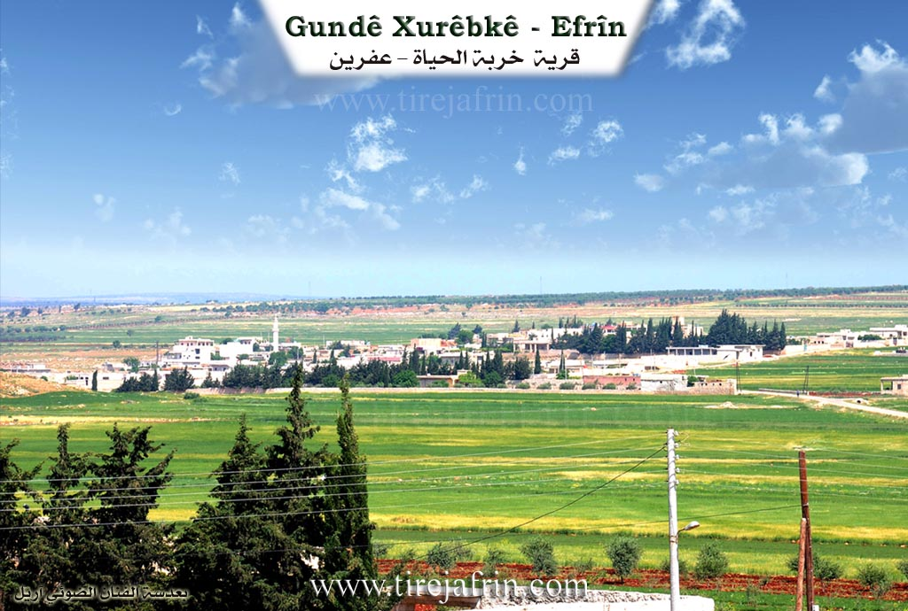

General Information
Nahiya (Subdistrict)
Efrîn
Also Known As
Xirbet el-Heyat, Xirêbke, Xirêbkê, Xurêbkê, خربة الحياة, زهرة الحياة, خراب حياة
Tribes
Rûbariyan
Families, Clans, etc.
Betal, Ebdo, Ebdê, Evd, Hacî Osman, Hec Bîlal, Hec Xelûf, Hec Ûso, Hembîro, Hemê Pîr, Hût, Mist, Miste, Mistê Hemê, Osê, Seyd, Sîdo, Xelîl, Îb, Îd

Photos


Basic Information about Xurêbkê
Source: Ax û Welat
Etymology: Xurebet el heyat or Xerabe meaning ruin because the site was a ruin when the founders arrived
Foundation Date/Period: 1818
Summaries
I. Summary from TirejAfrin Site (English) of Xurêbkê
Source: https://www.tirejafrin.com/site/kura%20afrin%20markaz-%20xurebka.htm
Xurbk / Xirbet El-Heyat
The following details appear in the book Çiyayê Kurmênc (Efrîn): A Geographical Study by Dr. Mihemed Ebdo Elî:
Xurbk, Xirbet El-Heyat /1435 inhabitants 178 hectares 36 km 445 m/:
The village was built on the ruins of an archaeological site, and there is an archaeological hill Tel to the south of it. The name of the village is derived from the archaeological ruin (xirbe), and from "Hayat," which is a female name of one of its early inhabitants.
It is a medium sized village located on the eastern slopes of Çiyayê Lêlûn, west of the public road leading to Heleb.
According to the book Efrîn... Her River and Her Green Hills by the writer Ebdulrehman Mihemed from the village of Qetme:
Xirbet El-Heyat is a village in Çiyayê Lêlûn, administratively following the subdistrict of the central villages of the Efrîn region, Heleb governorate.
It is a small village located in a fertile agricultural plain called Xubariyê and Çiyayê Lêlûn. It is bordered to the north by an agricultural plain and the village of Dêr Jemal and Ibîn; to the south by the village of Mayêr, Ziyaret, and the Riya Heleb-Efrîn (Heleb Efrîn road); to the east by the Riya Efrîn-Heleb (Efrîn Heleb road) and the village of Kefîn; and to the west by a valley, a rocky chain, and the villages of Ziyaret, Basilhaya, and Aqîbê.
The number of houses in the village is about 50, and the age of the village is approximately 150 years. Its old houses are made of mud with wooden ceilings, while the modern ones are made of reinforced concrete and stone. The village has an electricity and water network, a paved road reaching the center of the village, and a primary school. Its residents work in grain cultivation, livestock breeding, and other jobs.
Among the families present in the village are: Îd family, Ebdo family, Hacî Osman family, Hembîro family, and Sîdo family. Among the social figures is the village mukhtar: Ibrahîm Ibrahîm Cemal.
Sources
Book: جبل الكرد (عفرين) دراسة جغرافية Çiyayê Kurmênc (Efrîn): A Geographical Study by د. محمد عبدو علي Dr. Mihemed Ebdo Elî.
Book: عفرين .... نهرها وروابيها الخضراء Efrîn... Her River and Her Green Hills by عبدالرحمن محمد Ebdulrehman Mihemed from the village of Qetme.
Preparation and execution:
Manager of Tirej Efrîn site: Ebdulrehman Hacî Osman
20/12/2013
II. Summary of Xurêbkê from Ax û Welat
Source: https://www.youtube.com/watch?v=0W-SfOmicVc
The village of Xurêpkê, also referred to as Xirabê Kê, is a settlement with deep historical roots located in the Şêrawa district of the Efrîn region. The village is exclusively inhabited by members of the Rûbariyan tribe. According to local elders, Xurêpkê is one of five villages in the area, alongside Bênê, Cilbir, Kistear, and Basilê, that all originated from the village of Basilê. The settlement was established approximately 200 years ago, specifically cited as the year 1234 Hijri. The founders were two brothers, Hec Bîlal and Betal, accompanied by their cousin Hemê Pîr. When they arrived, the location was a ruin, leading them to name it Xurebet el heyat, which evolved into its current name.
The social structure of Xurêpkê is defined by the lineages of these founders. Over time, the population expanded into several key families. The documentary narrator identifies five primary families currently residing there: Xelîl, Osê, Ibê, Ebdê, and Hemê Pîr. Elders provide further genealogical detail, explaining that from Hec Bîlal came the lines of Seyd and Îb, while Betal is the ancestor of Hec Ûso and Hec Xelûf. The village has historically relied on agriculture, particularly olive cultivation, with some trees dating back 170 years. Additionally, they grow lentils, chickpeas, wheat, and cumin.
A distinctive feature of Xurêpkê is a large, man made pond or lake located within the village. Before modern infrastructure, water was scarce, and the villagers collectively dug this reservoir over a century ago to catch rainwater. It became the center of daily life where women would wash clothes, wool, and carpets, and where livestock were watered. Elders recount tragic stories associated with this site, including the drowning of a young girl who was the speaker's cousin, as well as two other individuals named Ehmed. Despite these tragedies, the site remains a symbol of the village's communal effort and history.
Following the events of 2018, the demography of Xurêpkê shifted significantly. The village opened its doors to displaced families from other parts of Efrîn, including Reco, Mabata, and Kaxrê. Approximately 450 displaced families joined the original 165 households, tripling the population. The local commune, named Şehîd Barîn, manages the affairs of both locals and the displaced population, fostering a spirit of unity. A new market was established to serve this growing population, as the road to Efrîn city was often blocked or difficult to access.
The village honors several martyrs who died in the conflict, including Şehîd Serfiraz, Şehîd Baz, Şehîd Serfiraz Cûdî, Şehîd Serfiraz Xelîl, Şehîd Şoreş Robarî, Şehîd Zinarîn, Şehîd Şervan Efrînî, and Şehîd Îbrahîm Îbrahîm. Education is also a priority; the first school was established in a private home in 1979 by the mukhtar, Henan Xelîl, before a formal school was built in 1981. Today, the village is known for its hospitality, its preservation of Rûbariyan tribal heritage, and its resilience in hosting hundreds of displaced neighbors.
Transcriptions and Subtitles
| Source | Video | Subtitles | Transcript |
|---|---|---|---|
| Ax û Welat 1 | Watch Video | Download SRT | View Transcript |
Foundation/Origin Information of Xurêbkê
The village was built on the ruins of an archaeological site.
Source: TirejAfrin Site
Founded by two brothers, Hacî Bilal and Betal, and their cousin Hemê Pîr, who migrated from the nearby village of Basile. They settled on a site that was previously ruins ("xirabe").
Source: Ax û Walat Transcript
Possible Village Name Meaning of Xurêbkê
The village name was derived from the archaeological ruin, and from "Hayat" which is a female name of one of its first inhabitants.
Source: TirejAfrin Site
They named the site "Xirbet el-Heyat" (Ruins of Life), a name that eventually evolved into the current Xurêbkê.
Source: Ax û Walat Transcript